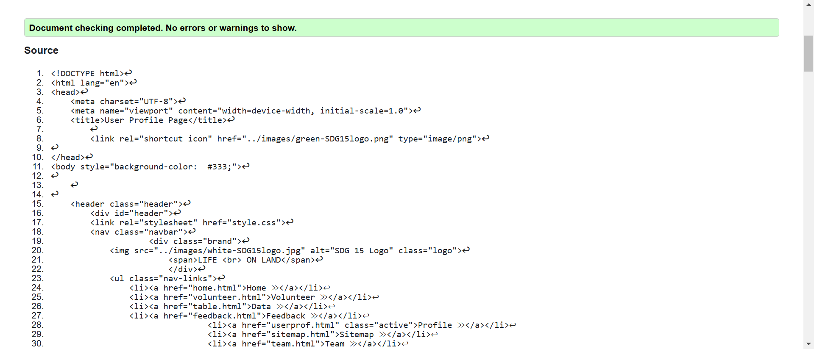
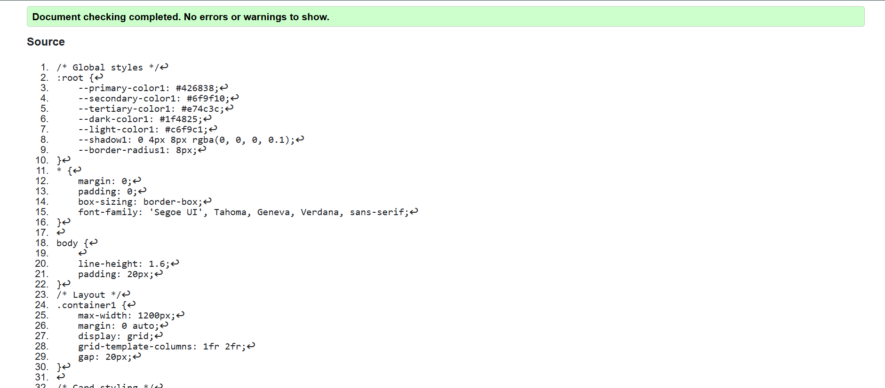
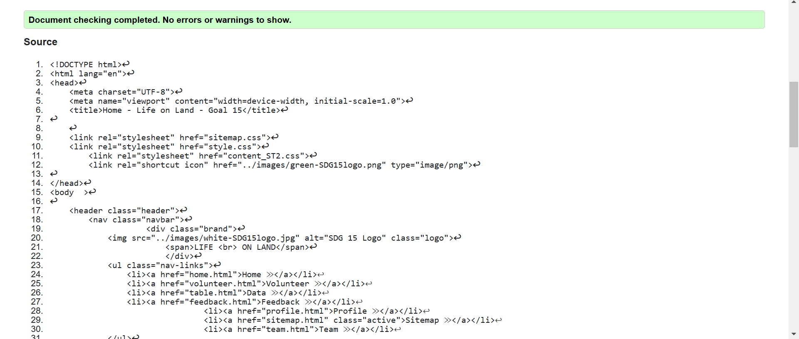
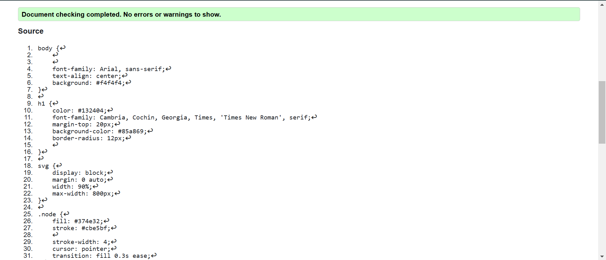
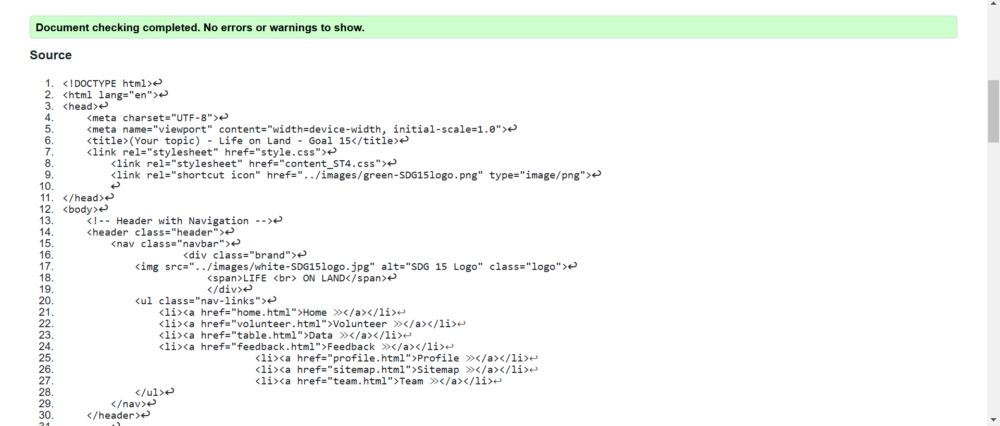
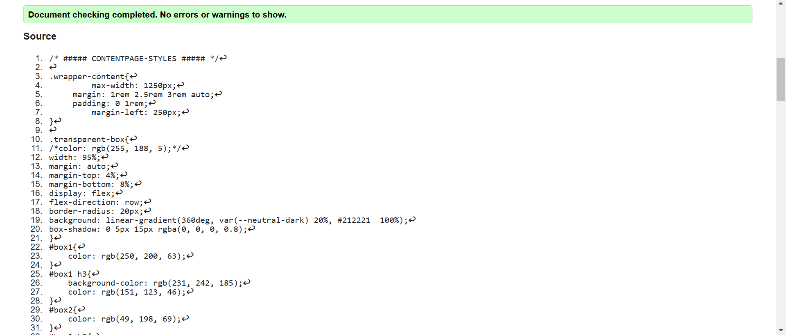

User Profile
The User Profile Page was developed using HTML and CSS to create a visually appealing and structured layout. The page includes a profile avatar, user details, skills, goals, and a contact section, ensuring a well-organized presentation of information.
View the implemented page here: User Profile | Validation Page
User Profile validation
HTML Validation
This is the validation proof
CSS validation
This is the validation proof
Sitemap
A sitemap is a structured file or page that outlines the organization and content of a website, serving as a guide for both search engines and users. For users, an HTML sitemap provides a clear overview of the website's structure, making navigation easier, especially on larger websites. Overall, a sitemap improves the discoverability of content and enhances user experience by organizing information in a clear and accessible way.
View the implemented page here: Site Map | Validation page
Sitemap validation
HTML Validation
This is the validation proof
CSS validation
This is the validation proof
Content Page
This page provides detailed information about Forest Protection under two sub topics of Sustainable Forestry and Reforestation featuring a mix of text content, media, and interactive elements.
View the implemented page here: Content Page | Validation Results
Content Page validation
HTML Validation
This is the validation proof
CSS validation
This is the validation proof
Reflection of the validation Report - Content Page
I also had a hard time during the validation on fixing the HTML bugs, among other things, specifying that many closing tags were missing and working on the CSS warnings, among other things, redundancies in the rules. These things were raised on the W3C validation tool, which helped me quickly identify the problems and solve them. Actually, some warnings could be seen as insignificant (for example, not using chosen CSS selectors); nevertheless, I tried very hard to clean up the code and made it more like it should be simply for better performance. In addition, I learned how important was the validation for accessibility; alt text was missing from particular images, so I made sure to apply a descriptive alt attribute to each of the images for accessibility enhancement. While few errors got resolved, there were still multiple warnings raised for web compatibility with certain CSS properties. I have noted those down and will always keep an eye on these in their impact on various browsers. The validation was, on the whole, significant in ways whereby it made possible the modification on my code formulation and quality in light of my project.